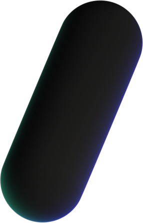
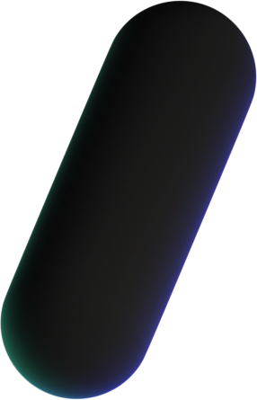

About the Program
Student Portfolios
Media
Foundation
Welcome to the Media Foundation Graduate Certificate Program. From film to studies to design, our students are a powerhouse of talent.
Humber's Media Foundation certificate program helps students develop foundational knowledge and skills as preparation for further study in advanced media programs in Humber's Faculty of Media & Creative Arts.
Our students have learned digital media studies, communications, writing, film studies, and design in preparation for further study in advanced media and communication studies. Graduates also have media training and in-studio experience that enables them to use up-to-date, industry-standard software to create computer mediated communication.
Companies that have hired our graduates
S+PDA
Humber Current News
Wednesday, December 7 2022
12:40 PM
Humber Hosts multicultural event for International Education Week
Wednesday, December 7 2022
09:27 AM
Artists difficult relationship with social media
Wednesday, December 6 2022
07:52 PM
BIPOC underrepresented in film, Humber student wishes to make a difference
Wednesday, December 6 2022
04:14 PM
Photo Gallery: showcase by Media Foundation grads